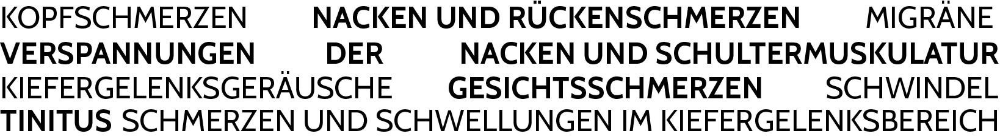

Behandlung von Kiefergelenken und ihren daraus folgenden Beschwerden
Funktionsstörungen der Kiefergelenke oder des Kauorgans werden als craniomandibuläre Dysfunktion = CMD bezeichnet, die mit folgenden Symptomen einhergehen können:
Aufgrund der vielfältigen Beschwerden dieses Krankheitsbildes bedarf die Behandlung einer genauen Funktion und Strukturanalyse.
Meine Kenntnisse in der Behandlung von CMD habe ich im Upledger Institut nach Groot Landeweer erlangt. Ich erstelle einen umfangreichen Befund mit dem Ziel Ihnen ein auf ihre Bedürfnisse abgestimmtes, ganzheitliches Therapiekonzept anzubieten.
Zurück